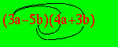

Osserva questo schema

devi moltiplicare il primo monomio della prima parentesi per il primo della seconda parentesi,
poi il primo della prima parentesi per il secondo della seconda parentesi,
poi il secondo della prima parentesi per il primo della seconda parentesi
infine il secondo della prima parentesi per il secondo della seconda parentesi